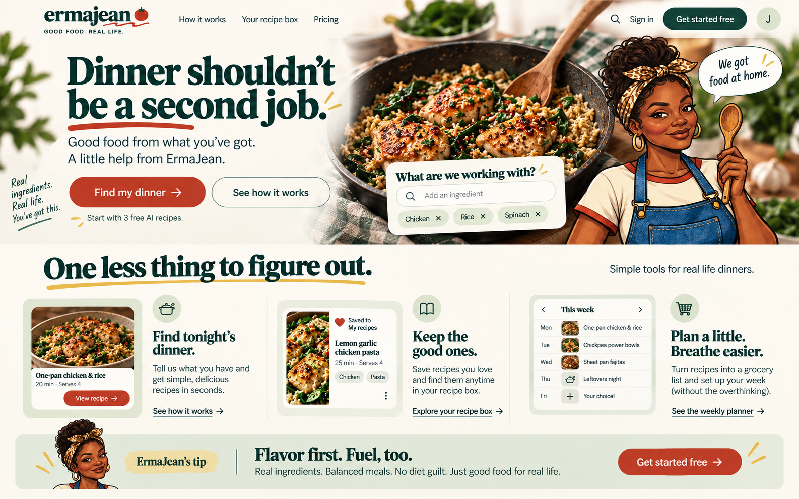
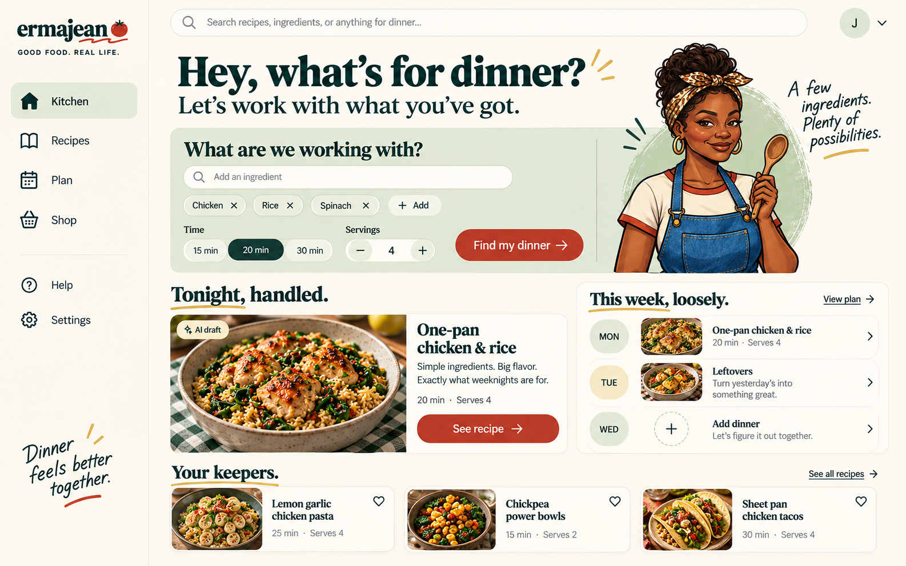
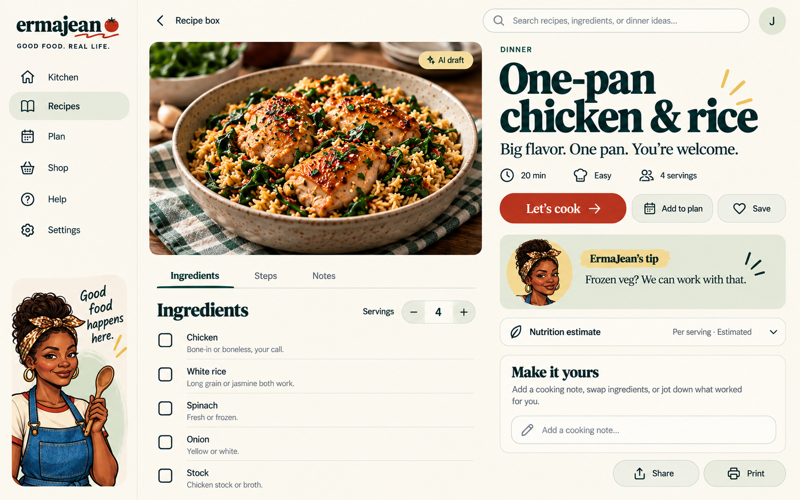
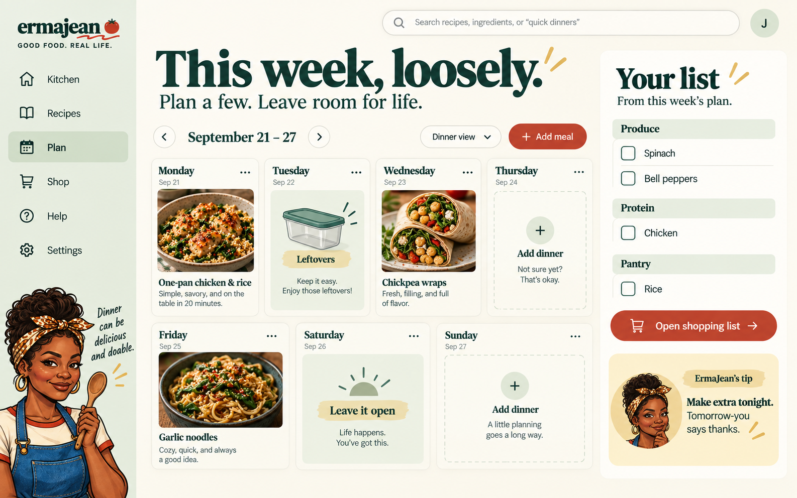

Dinner shouldn’t be a second job.
A public homepage with the mobile app’s voice, real product previews, and a clear path to dinner help.

Your kitchen, with room to work.
Ingredients, tonight’s suggestion, saved favorites and a loose weekly plan share a useful desktop workspace.

Everything for this dinner.
A two-column recipe layout keeps ingredients, cooking actions, notes and optional nutrition within reach.

This week, loosely.
A flexible week view and shopping pane make it easier to plan a few dinners without creating a second job.

Visual concepts generated with the built-in image tool. No application code has changed. Sample recipes are illustrative; implementation corrections and responsive behavior are documented in the web experience notes.